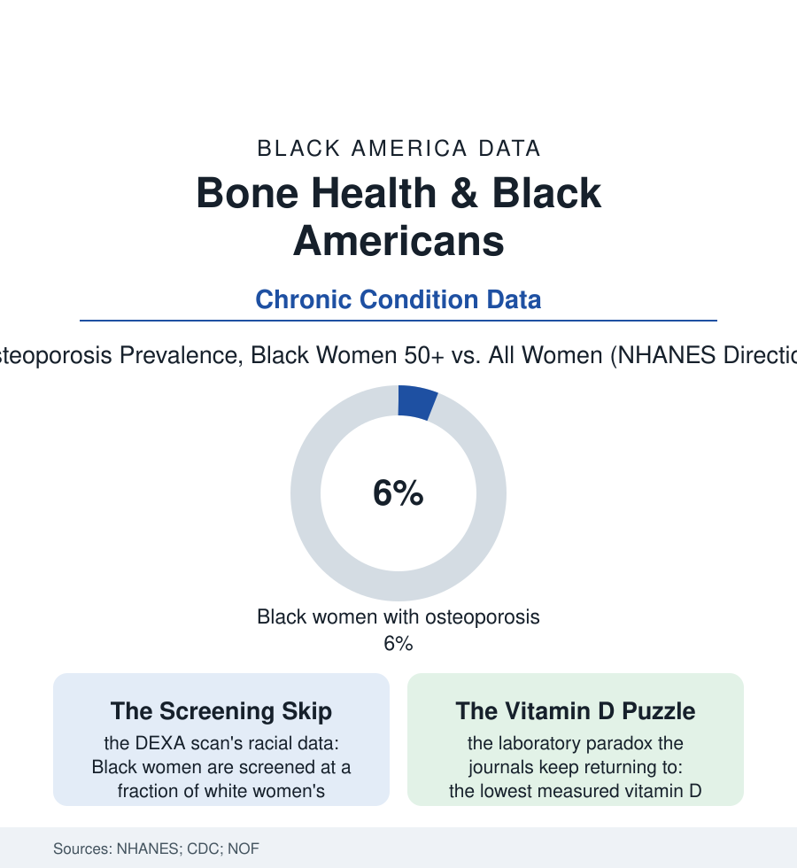

Black Public Health
Strong Bones, Late Charts: The Bone-Health Paradox
Black Americans have the densest bones and the lowest fracture rates in the federal data — and among the worst outcomes when a bone does break. The bone health file.

Bone is the rare file where the disparity runs backward — and then, at the moment of crisis, snaps back into the atlas's usual shape. Black Americans carry the highest bone density and the lowest osteoporosis and hip-fracture rates of any major group in the federal surveys. They are also screened the least, diagnosed the latest, and — when a hip does break — die of it at higher rates in the Medicare data. This article reads the bone health file.
The Advantage and Its Fine Print
The protective facts are robust across the NHANES cycles: bone mineral density at the hip and spine running measurably higher in Black adults from adolescence onward (the pediatric data showing the advantage arriving before puberty ends), osteoporosis prevalence in older Black women in the single digits where the national figure for women runs multiples higher, hip-fracture rates roughly half the white rate in the Medicare series — a genuine, body-level advantage the physiology literature attributes to skeletal geometry, bone microarchitecture, and hormonal processing differences still being mapped. The fine print, though, is where this file lives: the advantage is not immunity (the absolute counts of Black osteoporotic fractures run to the tens of thousands yearly in the estimates — a large burden riding under a favorable rate), the low-back and vertebral fractures hide in the under-imaging data, and the vitamin D rows present the file's standing scientific puzzle (the lowest average blood levels of any group in NHANES — by the laboratory cutoffs, deficiency nearly universal — beside the strongest bones: the research resolution pointing at binding-protein differences that make the standard test misread this population's actual supply, a reference-range artifact whose clinical consequence is a generation of charts flagging deficiency in the patients least likely to be deficient where it matters, while the genuinely deficient risk being lost in the noise). Add the secondary causes' distribution — the kidney file's mineral disorder, the diabetes medications' bone effects, the sickle cell skeleton's own fragility file running at right angles to the population advantage — and the paradox resolves into the usual lesson: group averages are not patients. Even the fracture-risk calculator carries the argument inside it: the standard tool asks the patient's race outright and adjusts the score — one of the last places in clinical software where the adjustment sits in plain sight, debated in the journals on exactly the terms this file lays out.
The Crisis Rows Reverse
The fracture event is where the file rejoins the atlas: the claims and registry studies finding Black hip-fracture patients waiting longer for surgery in the hospital data (the twenty-four-hour standard met less often), receiving less rehabilitation afterward in the post-acute data (the rehab file's pattern, bone edition), and dying within the year at rates above white patients' — the advantage of the bone itself spent, at the crisis, on the system's delays. The screening rows explain the late charts above them: DEXA testing rates for Black women at a fraction of white women's in the Medicare analyses (the clinician's and the guideline's shared assumption — low risk, low priority — functioning exactly as such assumptions do in every other file of this section: the population-level truth deployed as the individual-level excuse), treatment after diagnosis following the same slope in the pharmacy data (the bone-building drugs' Black uptake the lowest of any group in the claims series, the follow-up scans rarer still). The fall-prevention and calcium rows close the file on the environment's terms: the home-safety file's stairs and rails, the vitamin D and protein rows of the diet data in the elder years (the food file's senior edition), the sarcopenia overlap — muscle and bone declining together in the aging data of the seniors file, strength the one intervention that pays both ledgers at once. The bones are strong. The chart, as ever, is the weaker structure, and it is the one that decides what the strength gets used for.
Reading the Bone-Health Data
The bone file is the health section's parable of the average: a population can lead the nation in the underlying physiology and still be failed by a system that reads the average as a verdict on the person in the room. NHANES publishes the densities. The fracture registries publish the rest — and the rest is where the advantage goes to be spent or saved.
More in Black Public Health
Hypertension Among Black Adults: Prevalence, Control, and Consequences
About 55 percent of Black adults have hypertension — the highest rate of any U.S. group. Prevalence, onset, control, and the stroke, heart, and kidney consequences in the data.
Diabetes Among Black Adults: Prevalence and Complications
Nearly one in five Black adults has diabetes, diagnosed or undiagnosed — and its complications fall with particular weight. The CDC data on prevalence, control, and outcomes.
Black Life Expectancy: The Gap at Birth and Its Causes
Black life expectancy at birth is about 73 years, roughly five years below the national figure — the summary measure of every health gap in this section. The CDC data.
Source: National Health and Nutrition Examination Survey (NHANES); Centers for Disease Control and Prevention; National Osteoporosis Foundation; Medicare claims research.